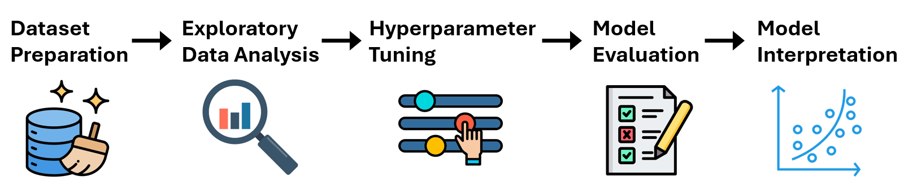
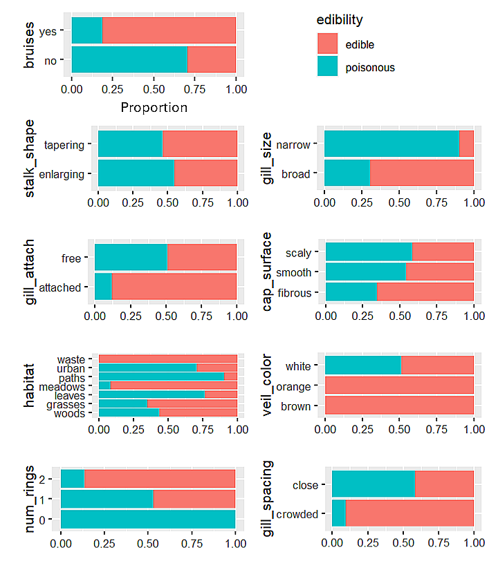
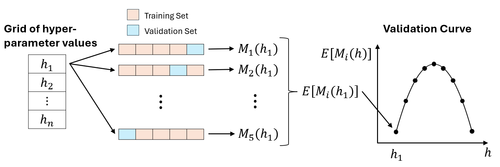
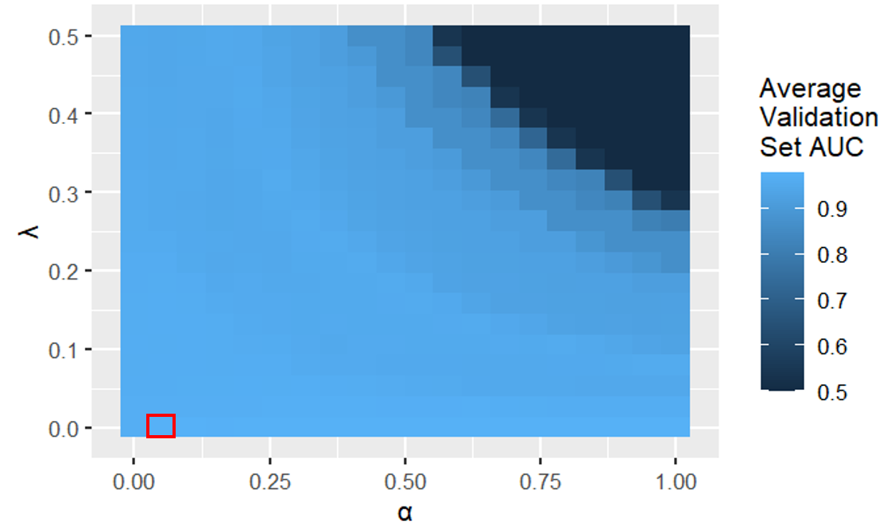
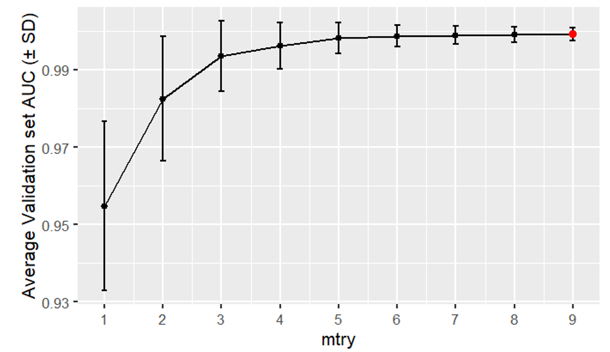
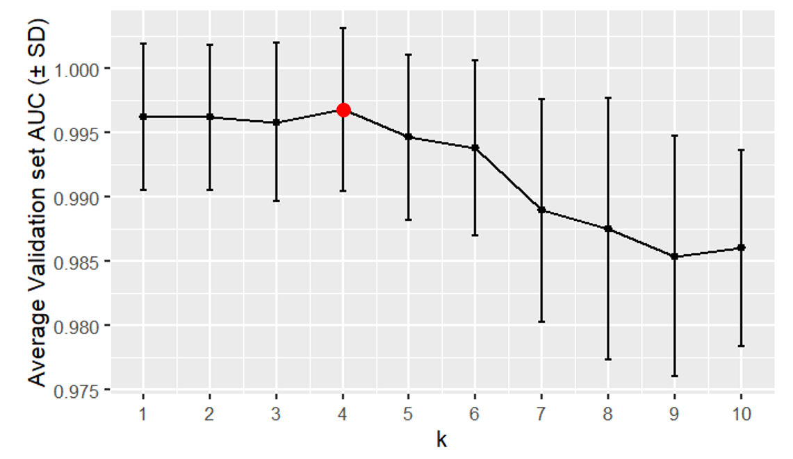
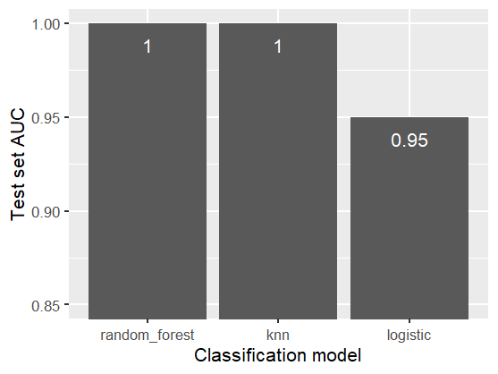
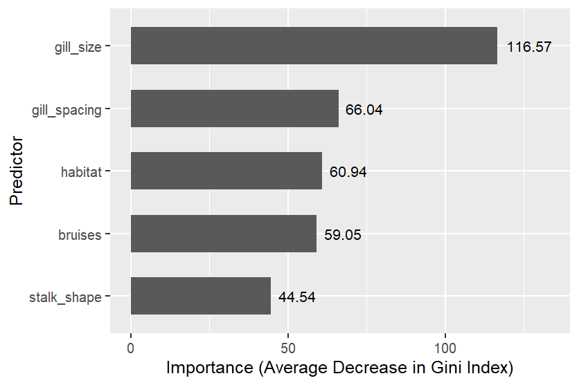

Predicting mushroom edibility using classification models
Summary

Problem: I wanted to predict whether a mushroom is edible using its physical characteristics.
Solution: I trained several binary classification models (logistic regression, random forest, and k-NN) to predict mushroom edibility. I used AUC to compare the models. I also used random forest to identify the most useful predictors.
Results: The best models were random forest and k-NN, which both achieved a 1.0 (perfect) test set AUC. The most useful predictors were gill size, gill spacing, and habitat.
R Code
Dataset Description
The dataset described 1,000 mushrooms, each of which was either poisonous or edible. All of the 9 predictors were categorical, and are described in the table below.
| Variable | Type | Categories |
|---|---|---|
| Edibility (target variable) | Binary | edible, poisonous |
| Bruises | Binary | bruises, no bruises |
| Gill size | Binary | broad, narrow |
| Stalk shape | Binary | enlarging, tapering |
| Cap surface | Nominal | fibrous, grooves, scaly, smooth |
| Gill attachment | Nominal | attached, descending, free, notched |
| Habitat | Nominal | grasses, leaves, meadows, paths, urban, waste, woods |
| Veil color | Nominal | brown, orange, white, yellow |
| Gill spacing | Ordinal | crowded, close, distant |
| Number of rings | Ordinal | zero, one, two |
Dataset Preparation
Encoding categorical variables: I converted each nominal variable into an unordered factor, and each ordinal variable into an ordered factor.
Train-test split: I split the dataset into an 80% training set and a 20% test set. This was necessary because I wanted to estimate each model’s performance on data it was not trained on (the test set).
Exploratory Data Analysis
Target variable distribution: In the dataset, 50% of the mushrooms were poisonous and the remaining 50% were edible.
Predictor-target distributions:

Proportion of poisonous mushrooms within each category of each predictor
In the figure above, we see that all mushrooms with a 'waste' habitat, an orange veil color, or a brown veil color were edible.
Meanwhile, mushrooms with 0 rings, a narrow gill size, or a 'paths' habitat had the largest proportion of poisonous mushrooms.
Hyperparameter Tuning
All the classification models had hyperparameters, which are parameters that
control each model's complexity and that are set before model training. To approximate the
best hyperparameters, I used grid search, 5-fold cross-validation, and AUC (using the caret package).
For example, if I test 10 sets of hyperparameter values using 5-fold cross validation, then I obtain 5 validation set AUC values for each set of hyperparameter values. The best set of hyperparameter values has the highest average validation set AUC.

\(M_i(h_j)\) is the value of the validation set evaluation metric for the \(j\)th set of hyperparameter values and the \(i\)th cross-validation iteration.
Classification Models
Logistic regression
Logistic regression assumes a linear relationship between the log odds of a mushroom being poisonous and the predictors. It can handle categorical predictors using one-hot encoding. $$ \log(\frac{p(\boldsymbol{x})}{1-p(\boldsymbol{x})}) = \beta_0 + \beta_1 x_1 + \ldots + \beta_q x_q $$ where \(p(\boldsymbol{x})\) is the probability that mushroom \(\boldsymbol{x}\) is poisonous, and \(x_i\) equals 1 or 0 (1 if mushroom \(\boldsymbol{x}\) belongs to predictor category \(i\), 0 otherwise).
The coefficients \(\boldsymbol{\beta}\) are calculated by minimizing the objective function. I used elastic-net regularization to prevent overfitting. Elastic-net adds a lasso penalty term and a ridge penalty term to the objective function, which limit the magnitudes of the coefficients. $$ \underset{\boldsymbol{\beta}}{\mathrm{argmin}}(\mathrm{RSS} + \lambda\sum_{j=1}^{q}[\alpha \beta_j^2 + (1 - \alpha) |\beta_j|]) $$ where \(\mathrm{RSS}\) is the residual sum of squares, \(\lambda\) is a hyperparameter that controls the amount of regularization, and \(\alpha\) is a hyperparameter that balances the amounts of ridge and lasso regularization.

Logistic regression validation heatmap (the best hyperparameter values were \(\lambda\) = 0 and \(\alpha\) = 0.05)
In the figure above, we see that logistic regression models with a large \(\alpha\) and a large \(\lambda\) have a low average validation set AUC because they underfit the data. This is because a larger \(\alpha\) removes more predictors (more lasso regularization) and a larger \(\lambda\) penalizes the coefficient magnitudes more.
Random forest
A classification tree splits the predictor space into regions using recursive binary splitting, then assigns a predicted class (poisonous or edible) for all mushrooms in each new region.
Since a single classification tree has high variance, a random forest returns the average of a set of classification trees, where each tree is trained on a bootstrap sample of the training set. To decrease the correlation between the trees, each split considers a different random subset \(S\) of the predictors. The \(\mathrm{mtry}\) hyperparameter controls the size of \(S\). $$ p(\boldsymbol{x}) = \frac{1}{B}\sum_{b=1}^{B}\hat{y}^b(\boldsymbol{x}) $$ where \(p(\boldsymbol{x})\) is the probability that mushroom \(\boldsymbol{x}\) is poisonous, \(B\) is the number of trees, and \(\hat{y}^b(\boldsymbol{x})\) equals 1 or 0 (1 if the classification tree trained on bootstrap sample \(b\) predicts \(\boldsymbol{x}\) to be poisonous, 0 otherwise).

Random forest validation curve (the best hyperparameter value was \(\mathrm{mtry}\) = 9)
k-NN
k-Nearest Neighbors (k-NN) is a non-parametric method, meaning it makes no assumptions about the shape of the decision boundary in the predictor space. k-NN classifies each mushroom \(\boldsymbol{x}\) using the edibilities of the \(k\) nearest training set mushrooms to \(\boldsymbol{x}\) in the predictor space. \(k\) is a hyperparameter.
$$ p(\boldsymbol{x}) = \frac{1}{k}\sum_{\boldsymbol{x}_j\in K(\boldsymbol{x})}^{} y(\boldsymbol{x}_j) $$ where \(p(\boldsymbol{x})\) is the probability that mushroom \(\boldsymbol{x}\) is poisonous, \(K(\boldsymbol{x})\) is the set of the \(k\) nearest training set observations to \(\boldsymbol{x}\) in the predictor space, and \(y(\boldsymbol{x}_j)\) equals 1 or 0 (1 if mushroom \(\boldsymbol{x}_j\) is poisonous, 0 otherwise).

k-nearest neighbors validation curve (the best hyperparameter value was \(k\) = 4)
In the figure above, we see that k-NN models with a large \(k\) have a low average validation set AUC because they underfit the data. This is because a larger \(k\) creates a smoother decision boundary.
Model Evaluation
To compare the models across all probability thresholds, I used their AUC (Area Under Curve) values. We can use AUC because the distribution of the target variable in the dataset is balanced. The best model has the largest AUC value (0.5 ≤ AUC ≤ 1).

Test set AUCs for all classification models
In the figure above, we observe that random forest and k-NN achieved 1.0 (perfect) test set AUCs. This means that for every poisonous mushroom in the test set, these models predicted a higher probability of being poisonous than for all the edible mushroom in the test set.
Model Interpretation
In a classification tree, a pure node is a node that only contains poisonous mushrooms, or only contains edible mushrooms. The Gini index measures the purity of a node in a classification tree. A smaller Gini index value indicates higher purity. $$ G(A) = 1 - [p_{\mathrm{poisonous}}^2(A) + p_{\mathrm{edible}}^2(A)] $$ where \(G(A)\) is the Gini index of node \(A\), and \(p_{\mathrm{poisonous}}(A)\) is the proportion of poisonous mushrooms in \(A\).
Splitting a node \(A\) returns a left child node (\(A_{\mathrm{left}}\)) and a right child node (\(A_{\mathrm{right}}\)), both of which have a smaller Gini index than \(A\). $$ \Delta G(A) = G(A) - [\frac{n(A_{\mathrm{left}})}{n(A)}G(A_{\mathrm{left}})+\frac{n(A_{\mathrm{right}})}{n(A)}G(A_{\mathrm{right}})] $$ where \(\Delta G(A)\) is the decrease in Gini index from splitting node \(A\), and \(n(A)\) is the number of mushrooms in \(A\).
Within a random forest, the larger the average decrease in the Gini index for all splits using predictor P, the more useful P is.

Random forest predictor importances of the five most important predictors
Conclusion
The best models were random forest and k-NN, which both achieved a 1.0 (perfect) test set AUC. The most useful predictors were gill size, gill spacing, and habitat.